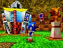

「ソニックワールド」
スクリーンショット
ギャラリー館
「SONIC THE HEDGEHOG」に登場するキャラクターたちの、いろいろなイラストが見られます。
ムービー館
「SONIC THE HEDGEHOG」に関係したいろいろなムービーが見られます。
サウンド館
ゲーム中のBGMとSEが聴けます。

キャラクター館
「ソニックファミリー」と「エッグマンファミリー」の２つの入口があり、入った入口によってプロフィールを見られるキャラクターがかわります。
ヒストリー館
「SONIC THE HEDGEHOG」の歴史がわかる年表が見られます。